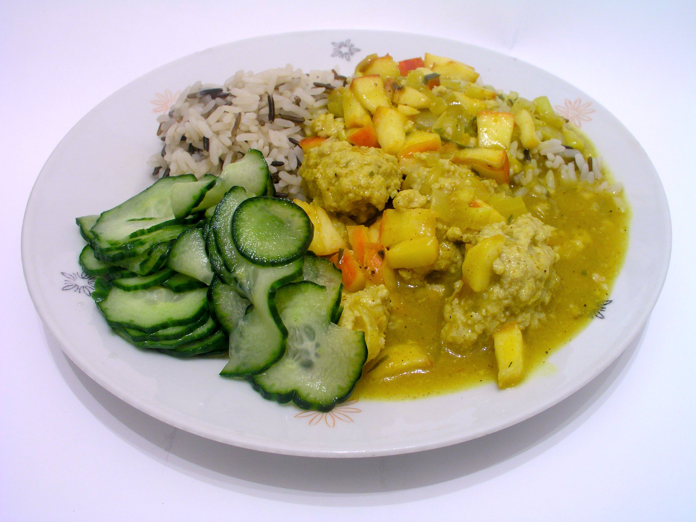

Boller i karry

Ingredients:
- 500g minced meat (beef or pork)
- 1 onion, finely chopped
- 1 egg
- 2 tablespoons breadcrumbs
- Salt and pepper to taste
- 2 tablespoons butter
- 2 tablespoons curry powder
- 400ml coconut milk
- 1 tablespoon flour
- 1 tablespoon tomato paste
- 1 tablespoon soy sauce
- 1 tablespoon sugar
- 1 tablespoon lemon juice
- 1 tablespoon chopped fresh coriander (optional)
Instructions:
- In a bowl, mix the minced meat, chopped onion, egg, breadcrumbs, salt, and pepper until well combined. Form the mixture into small meatballs.
- In a large pan, melt the butter over medium heat. Add the meatballs and cook until browned on all sides. Remove the meatballs from the pan and set aside.
- In the same pan, add the curry powder and cook for 1 minute until fragrant. Stir in the flour and cook for another minute.
- Gradually add the coconut milk, stirring constantly to avoid lumps. Add the tomato paste, soy sauce, sugar, and lemon juice. Bring the sauce to a simmer and cook for 5 minutes until thickened.
- Return the meatballs to the pan and simmer for another 10 minutes until the meatballs are cooked through and the sauce is flavorful.
- Garnish with chopped fresh coriander if desired. Serve the meatballs and sauce over rice or with bread. Enjoy your Boller i karry!
Tips:
- You can adjust the amount of curry powder to your taste preference.
- For a richer flavor, you can add a splash of cream to the sauce before serving.
- Feel free to add vegetables like bell peppers or peas to the sauce for added nutrition and color.
Home